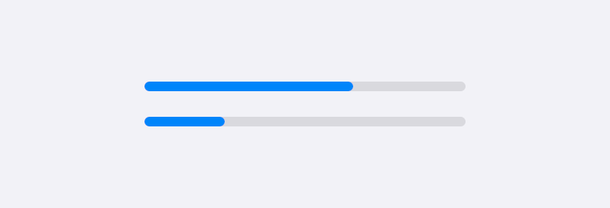
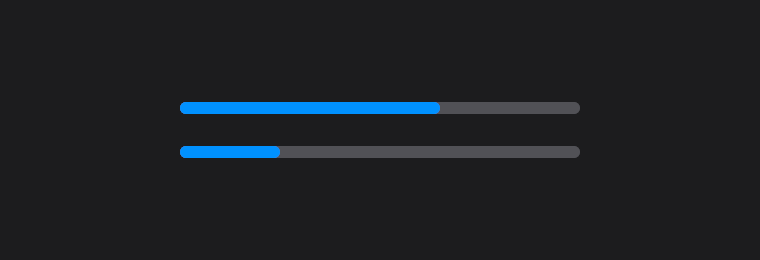
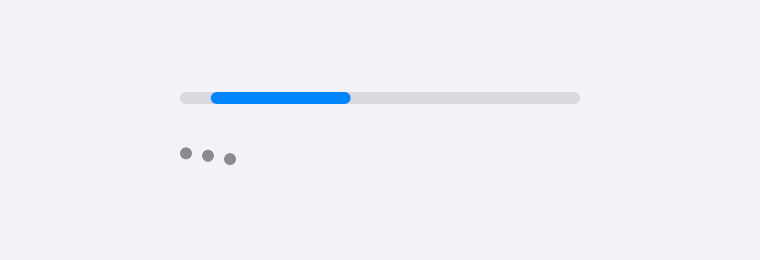
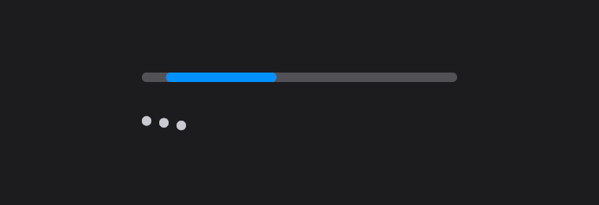
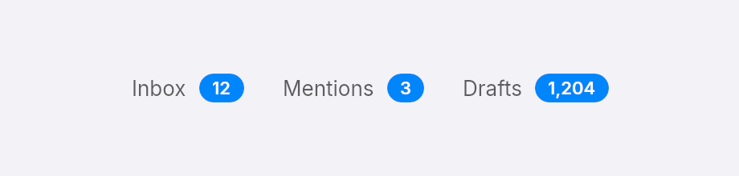
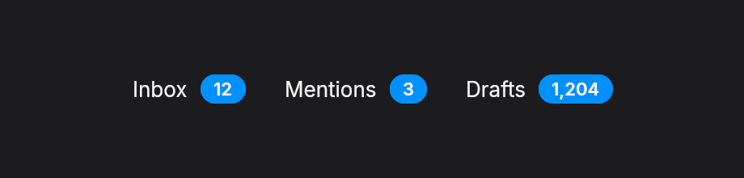
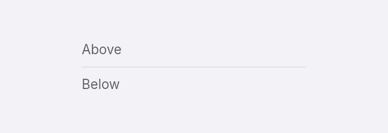
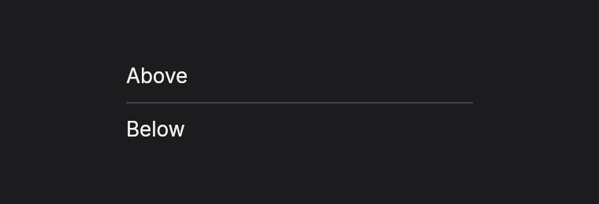
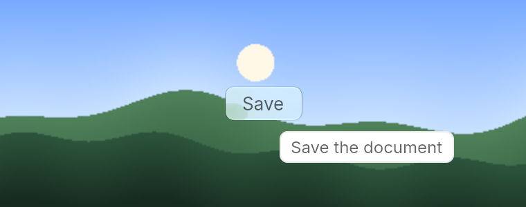
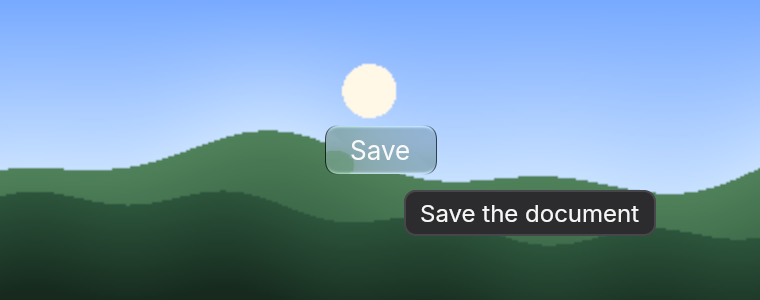

Progress, badges and tooltips
Feedback pieces that tell the user something is happening, how much, or what a control does.
Progress bar
progress(theme, value) takes a value from 0 to 1 and clamps anything else. It is 200 px wide and 6 px tall unless you set w. Screen readers get the value, and a name when you call label.


fn progress_bars(theme: &Theme) -> Element<Msg> {
column()
.gap_4()
.items_start()
.child(progress(theme, 0.65).label("Upload"))
.child(progress(theme, 0.25).label("Download"))
}When you cannot say how long
progress_indeterminate sweeps a segment back and forth along the bar, and spinner shows three dots that hop one after another. Both keep the window redrawing while they are on screen, and stop when you remove them. Give each a label such as "Loading", because there is no value to read out.


fn progress_unknown(theme: &Theme) -> Element<Msg> {
column()
.gap_4()
.items_start()
.child(progress_indeterminate(theme).label("Loading"))
.child(spinner(theme).label("Loading"))
}Badge
badge(theme, label) is a small accent-colored pill for a count. It is 18 px tall and grows with its label. Use .bg(...) for another color.


fn badges(theme: &Theme) -> Element<Msg> {
let entry = |name: &str, count: &str| row().items_center().gap_2().child(text(name.to_string())).child(badge(theme, count.to_string()));
row().gap_6().child(entry("Inbox", "12")).child(entry("Mentions", "3")).child(entry("Drafts", "1,204"))
}Divider
divider(theme) is a 1 px line across its parent, and vertical_divider(theme) runs down it.


fn dividers(theme: &Theme) -> Element<Msg> {
column()
.w(220.0)
.gap_2()
.child(text("Above"))
.child(divider(theme))
.child(text("Below"))
}Tooltip
tooltip(text) on any element, or on a button, shows a small box near the pointer after it has rested there for about half a second. It also appears when the pointer rests on anything inside the element. Moving off, pressing or leaving the window hides it. Tooltips are not shown for keyboard focus yet.


fn tooltip_example(_theme: &Theme) -> Element<Msg> {
button("Save").tooltip("Save the document").on_press(Msg::Save).into()
}